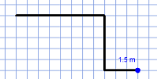

Główne okno programu
Tworzenie rozkładu pomieszczeń
Widok pięter
Podgląd hipergrafów
Ustawienia sytemu
Walidacja projektu
Za pomocą zakładek(4,5,6,7) możliwa jest zmiana kontekstu pracy pomiędzy edycją rozkłądu pomieszczeń pojedynczego piętra, edycją relacji pomiędzy piętrami, a edycją lub wyborem zestawów testów zgodności które są wykonywane dla projektu. Po zmianie zakładek zmienia się zawartość panelu głównego(8) oraz akcje dostępne w lewym panelu(9).
Tworzenie rozkładu pomieszczeń rozpoczyna się od narysowania obrysu. Następnie może on być dzielony na mniejsze pomieszczenia, można nanosić dodatkowe elementy oraz cofać swoje akcje. Aby określenić rozmiaru dostępnego arkusza, gęstości siatki i inne parametry należy przed rozpoczęciem projektowania skorzystać z ustawień systemu. Możliwa jest zmiana wielkości widoku za pomocą przycisków ("+", "-") górnej części lewego panelu.
Aby rozpocząć rysowanie obrysu należy nacisnąć lewy przycisk myszy na kratkowanym obszarze. Następnie przesuwając kursor po siatce dodawane są kolejne odcinki.Aby wycofać się z aktualnie rysowanej linii należy nacisnąć prawy przycisc myszy. Rysowanie obrysu kończy się w momencie zapętlenia łamanej.
Po stworzeniu obrysu można dowolnie dzielić obszary na mniejsze. Aby dokonać podziału należy zaznaczyć wybrany obszar klikając na niego lewym przyciskiem myszy. Następnie, po kliknięciu na krawędzi zaznaczonego obszaru rozpoczyna się rysowanie linii podziału. Aby wycofać się z aktualnie rysowanej linii należy nacisnąć prawy przycisc myszy. Linia podziału kończy się w momencie osiągniecia krawędzi obszaru, w tym samym momencie obszar jest dzielony.

W celu wprowadzenia właściwości obszaru również nalezy go zaznaczyć, klikając lewym przyciskiem myszy. Zaznaczone obszary kolorowane są na żółto, obszary pod kursorem na niebiesko. Aby odznaczyć należy ponownie kliknąć na zaznaczony obszar lub zaznaczyć inny. Dla zacznaczonego obszaru można w lewym panelu wprowadzić jego nazwę (pole Area Label) oraz wybrać rodzaj pomieszczenia (list rozwijana Area Type). W kolejnym polu wyświetlnana jest powierzchnia obszaru.

Dolne menu składa sie z nastepujących elementów:

Przyciski 1 i 2 pozwalają na zmianę linii podziału pomiędzy linią ciągłą a przerywaną. Linia przerywana oznacza w zależności od wybranej konfiguracji:

Naciśnie przycisku dodawania drzwi(3) powoduje przejście w tryb dodawania drzwi. Mogą one być umieszczane tylko na ścianach. Aby wyjść z trybu dodawania drzwi nalezy ponownie nacisnąć ten przycisk.

Za pomocą przycisku cofania podziału(4), aktywuje się nowe okno pokazujące historię dokonanych w projekcie podziałów. Po kliknięciu na na węzeł w drzewie podziałów, pomieszczenia powstale w jego wyniku zostają podświetlone. Nastepnie klikając przycisk poniżej można usunąć zaznaczony podział. Tylko podziały na dole hierarchii mogą być usuwane. Aby usunąć podział znajdujący się wyżej w hierarchii, należy najpierw usunać późniejsze podziały. Aby zamknąć okno historii podziałów należy ponownie nacisnąć przycisku cofania podziału(4).

Przycisk kasowania(5) usuwa cały projekt.
Przycisk wywoływania testów zgodności(6) powoduje wykonanie aktualnie wybranych testów. Ich wyniki prezentowane są w konsoli walidacji projektu(7).
Do projektu mozna dodawać również czujniki bezpieczeństwa, reprezentujące takie urządzenia jak czujnik ruchu, kamery przemysłowe, czujnik dymu, poziomu dwutlenku węgla lub spalin, temperatury, itp. W celu dodania czujnika bezpeczeństwa należy:

Wszystkie ementy diagramów projektowych zaprezentowane są na poniższym przykładzie.

W przypadku projektowania bydunków wielopiętrowych należy zacząć od wybrania liczby pięter w ustawieniach. Aby wybrać piętro do edycji nalezy skorzystać z listy rozwijanej w lewym panelu.

W celu stworzenia punktu odniesienia obrys parteru jest zaznaczany jasnoszarą linią również na wyższych piętrach.

Po wybraniu zakładki widoku pięter pokazywane są wszystkie piętra, z parterem najniżej i ostatnim pięterem najwyżej. W tym widoku można zobaczyć w całości porjektowany budynek oraz wprowadzić relacje międzypiętrowe.
Dostępne są tutaj następujące typy relacji:
Aby dodać relację między piętrami należy po wybraniu typu relacji, kliknąć lewym przyciskiem myszy na pomieszczenie na jednym z pięter. Pomieszczenie znajdujące się pod kursorem zostanie podświetlone i to ono będzie wchodziło w skład relacji. Po wybraniu pierwszego pomieszczenia pojawi się strzałka symbolizująca relację. Nastepnie nalezy kliknąć na kolejne pomieszczenie aby je dodać do relacji. Aby zakończyć nalezy użyć prawego przycisku myszy.

Hipergrafy są wewnętrzna strukturą danych używaną do zapisu projektu przez HSSDR. Ich podgląd nie jest niezbędny do używania systemu, zakładka ta służy na potrzeby analizy programu. Na liście rozwijanej w lewym panelu możliwy jest wybór prezentacji wyświetlania hipergafu dla poszczególnych pięter lub całego budynku. Możliwe jest przesuwanie elementów oraz zmiana wielkości widoku za pomocą przycisków ("+", "-") górnej części lewego panelu.

Po wybraniu opcji z menu Settings można zmienić następujące ustawienia systemu: